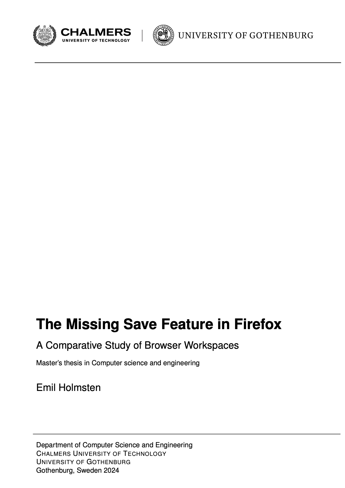
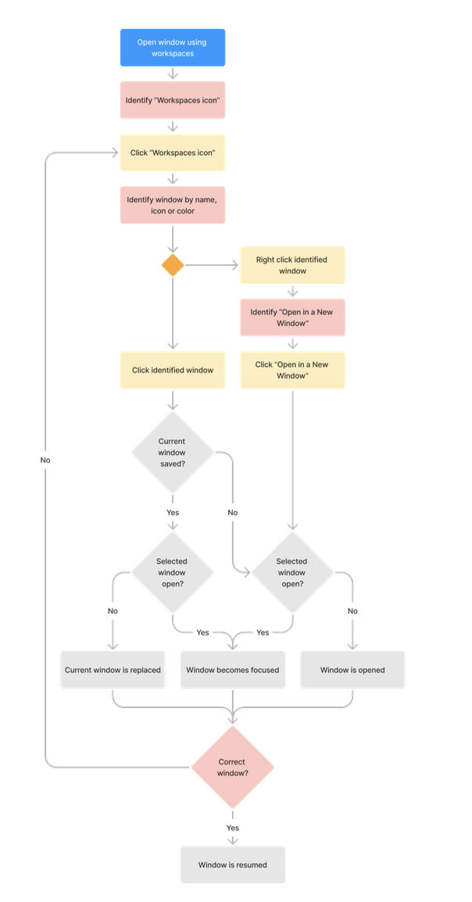
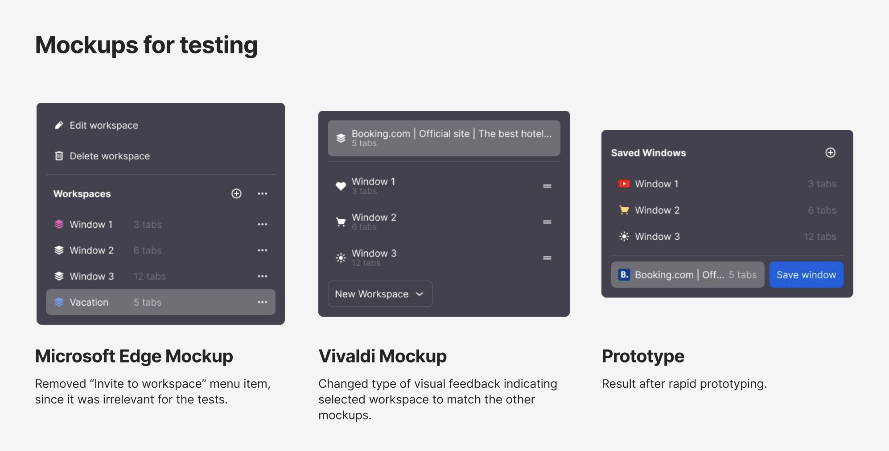
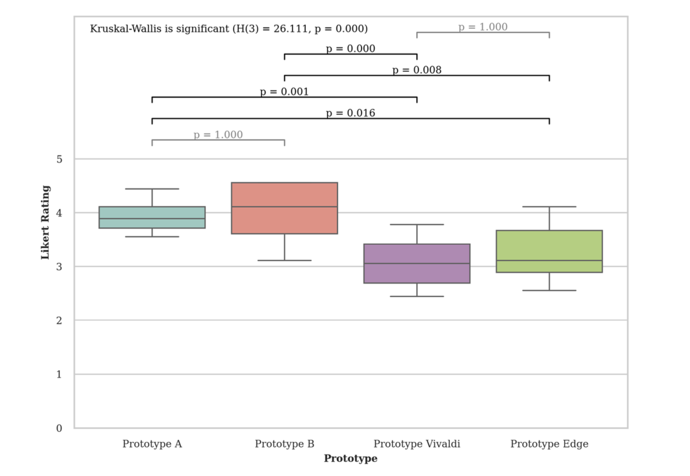

Saving Browser Windows
This masters thesis investigates how browsers can better support multi-session web tasks, meaning tasks that span multiple browsing sessions over time, by analysing existing window-saving solutions, identifying user needs through task analysis and interviews, and designing and evaluating prototype interfaces in direct comparison with existing workspace implementations in Microsoft Edge and Vivaldi to assess usability improvements.
Background
Most modern browsers have until recently (at the time of the study) lacked a native window-saving feature, leading many users to rely on session persistence, extensions, or manual workarounds to save their tabs.
Research foundation
The design direction was informed by a competitive audit of existing browser workspace implementations, task analysis of save and restore workflows, and interviews focused on how users manage multi-session browsing tasks.

Usability evaluation
The concept was evaluated through a comparative usability study against existing browser workspace implementations. Results showed statistically significant improvements for several tasks in ease of use, task efficiency, and user confidence when saving and restoring windows compared to comparison baselines Microsoft Edge and Vivaldi.


Likert scale ratings revealed significant differences between the research prototypes and both Microsoft Edge and Vivaldi.
Recent Developments
Microsoft Edge now exposes “Save tabs to a workspace” directly in its “New” dropdown, giving window saving equal prominence to workspace creation.
This change reflects the study's primary recommendation: to prioritise saving windows as workspaces instead of prioritising creating new workspaces.